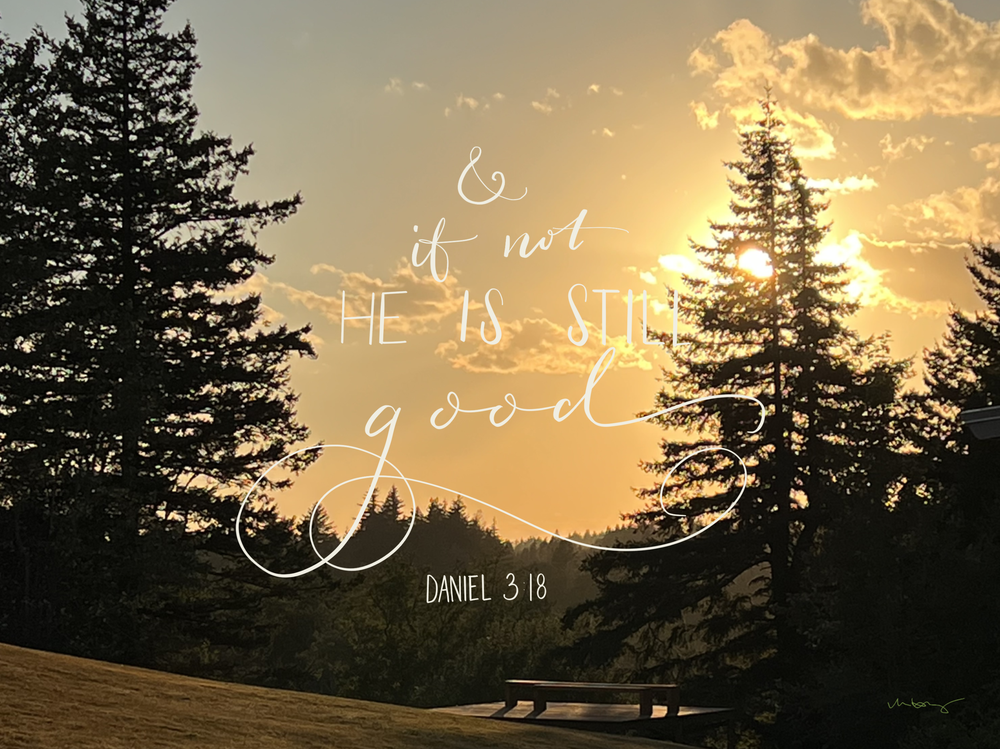
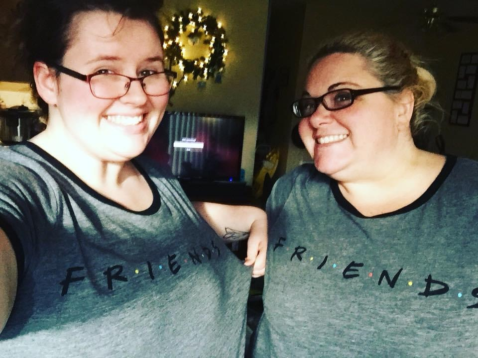
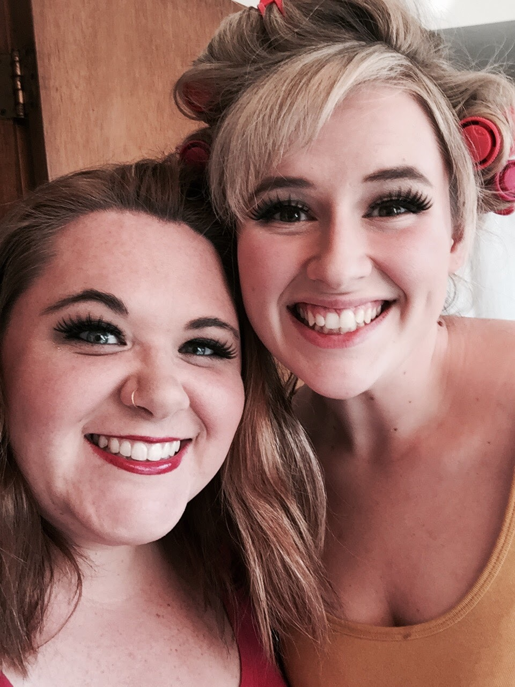
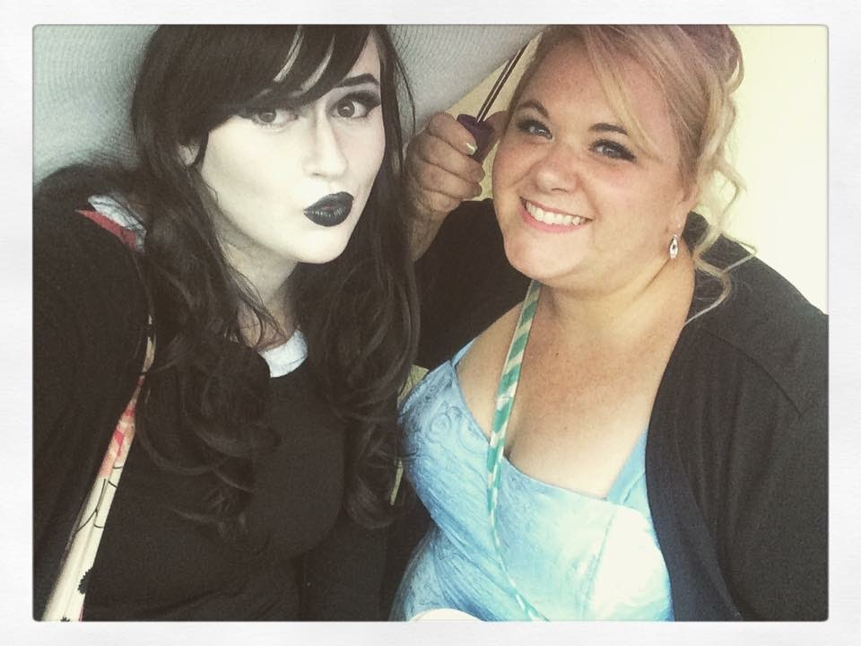

"and if not..." Grief and Giving Thanks
Practicing thanksgiving when we don't get what we want.
11/19/2026 by Melissa Hundley

Typically not my favorite word to hear...but sometimes we need to hear it.
Seven year ago, God said "no" to me...and to my friends. To be honest, I didn't understand it. I was mad about it...and I didn't really know how to handle it.
OK..time for some context. I had a friend. She was in a lot of ways the complete opposite of me. She was tall (I am not...), she was an extrovert (I am definitely not), and she was not afraid to say what was on her mind (I'm getting better at this one...). She was also quite a bit younger than I was. In a lot of ways, we shouldn't have been friends, but we were...and we were fierce friends.
Meet Meg. She had moved back to the US from Africa where her family had been missionaries. She came back to get her GED and go to college. She introduced me to some of my favorite things! Parks and Rec, sushi, seeing broadway shows in town, and so much more. While she was back in the US, she fell in love, got married, and while it wasn't an easy journey, she and her husband had a beautiful baby boy.
A couple of years later, she and her husband found out she was pregnant again, but this time with TWINS! (she had always wanted twins...a boy and a girl). This is where the story gets hard.

I think it was about 14 weeks into her pregnancy that she went into the doctor for some back pain and fatigue that she had been attributing to carrying twins...but it turned out to be more than just the pregnancy.
She was diagnosed with an aggressive form of leukemia. They were given options, but they were wanting to do everything they could to keep the babies safe. So they sent her to the university hospital where they had a dedicated cancer wing.
I had come by the hospital to visit just before they transferred her to the university hospital, so I drove her mom and I up to the hospital and we walked what seemed like forever to find the cancer wing. While her mom went in to see her, I sat outside the cancer wing and prayed. I prayed for her cancer to be healed, for the babies to be healthy, and for this to be over quickly.

In all fairness, one of those prayers was answered with a yes...just not the one I really wanted.
Later that evening, I headed home and let Meg's mom know that she could call me if she needed anything. I went to church the next morning and continued to pray for her and her family (twins included). I had friends come and pray with me for her. I did everything I could.
but God said "no"
I remember getting a text from her mom Tuesday morning just as I was about to head to work for the day. She told me that Monday night, Meg had carried her twins to the arms of Jesus.

To say I was numb, is an understatement. I called my boss and let him know what was going on and that I needed to stay home (thankfully, I had met with him the day before and shared about what had happened over the weekend)
I kept thinking about her 2 year old son and her husband...all the moments they would miss...all the moments I would miss.
I'll be honest...it took awhile before I could find reasons to be thankful that she was gone. It took awhile before I could genuinely say I wasn't angry with God for taking her from her family and friends sooner than we thought she should have been taken. I still don't understand why God said "no" to my prayers and the prayers of her family...but I know that no matter what God's answer is...He is still good.
The photo and scripture reference at the top of this post is taken from the story of Shadrach, Meshach, and Abednego in the book of Daniel. They were thrown into a fiery furnace for refusing to bow do to King Nebuchadnezzar. In verse 18 they tell the king that even if God doesn't rescue them from the fire, they will not serve the king's gods or idols. They truly believed that no matter what, God is still good.
I don't know the full extent of Meg's impact on people's lives...but I do know the impact she had on mine. She loved people fiercly, she loved God fiercely and was never afraid to tell people about Him. She helped me to be more confident (and yes, I still have some room to grow in this area), and to learn to love the person God created me to be. She taught me to cherish my friends, and she was the one who started our Friendsgiving tradition.

I've learned to see the good that came from God's "no". Meg didn't have to deal with the pandemic, or nearby wildfires that happened the following summer. She brought another best friend into my life that understands the grief and random tears that fall, often when it's least expected or convenient.
Maybe most importantly for the current season of my life, I learned to trust God even when I don't see or understand the plan. I can trust that He is good...no matter what...and that He is behind the scenes working things out for the good of His people.
I still miss Meg and think about her often. There are things in life that are just not as fun without her (shopping for clothes, for example). I know I'll get to see her again in Heaven, and I look forward to that day, but in the meantime, I will continue to thank God for bringing Meg into my life. For the time we had together, the friendships she brought into my life, encouraging me to take the trip, spend the money, and the permission to watch Parks and Rec for the millionth time...I am thankful.
I don't know where you are in life right now. Maybe you've experienced grief before, or maybe you're experiencing it right now, and it's fresh. Trust that God is still good...even in the "no" moments...even when it doesn't make sense. He is still good...and He loves you.
...He is still good.
If you're interested in purchasing a print of this piece, you can find it on my Etsy shop by clicking the image above.